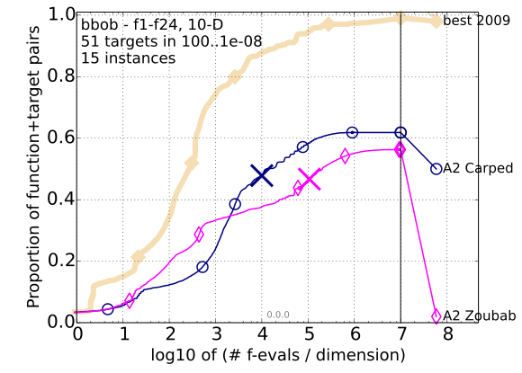
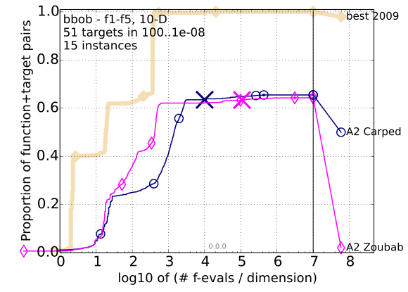
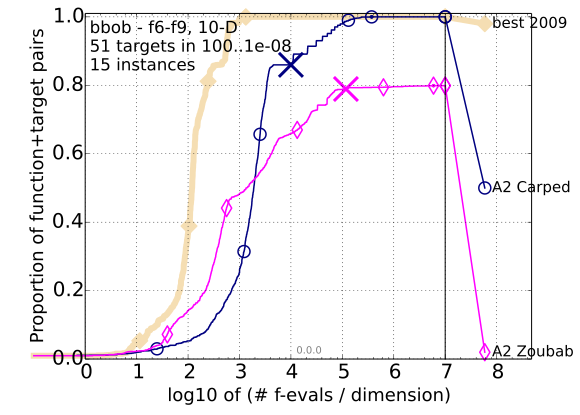
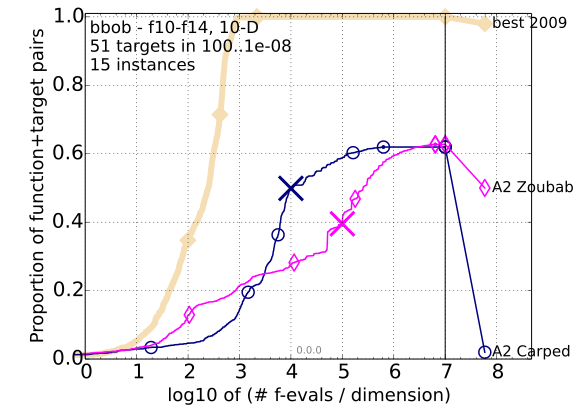
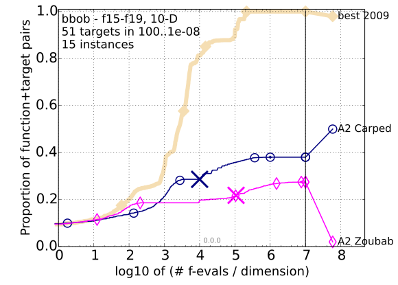
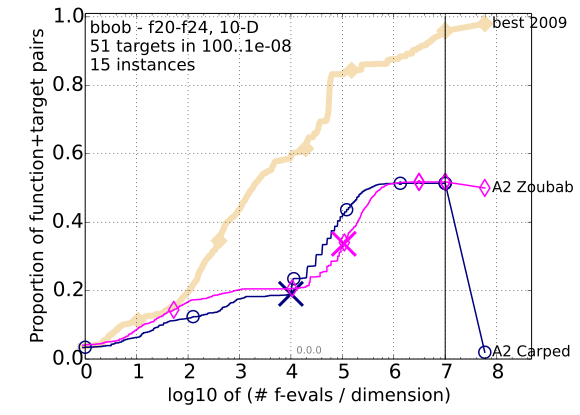

All functions
Separable functions
Misc. moderate functions
Ill-conditioned functions
Multi-modal functions
Weak structure functions
" Bootstrapped empirical cumulative distribution of the number of objective function evaluations divided by dimension (FEvals/DIM) for 51 targets with target precision in $10^{[-8..2]}$ for all functions and subgroups in 10-D. The "best 2009" line corresponds to the best aRT observed during BBOB 2009 for each selected target.